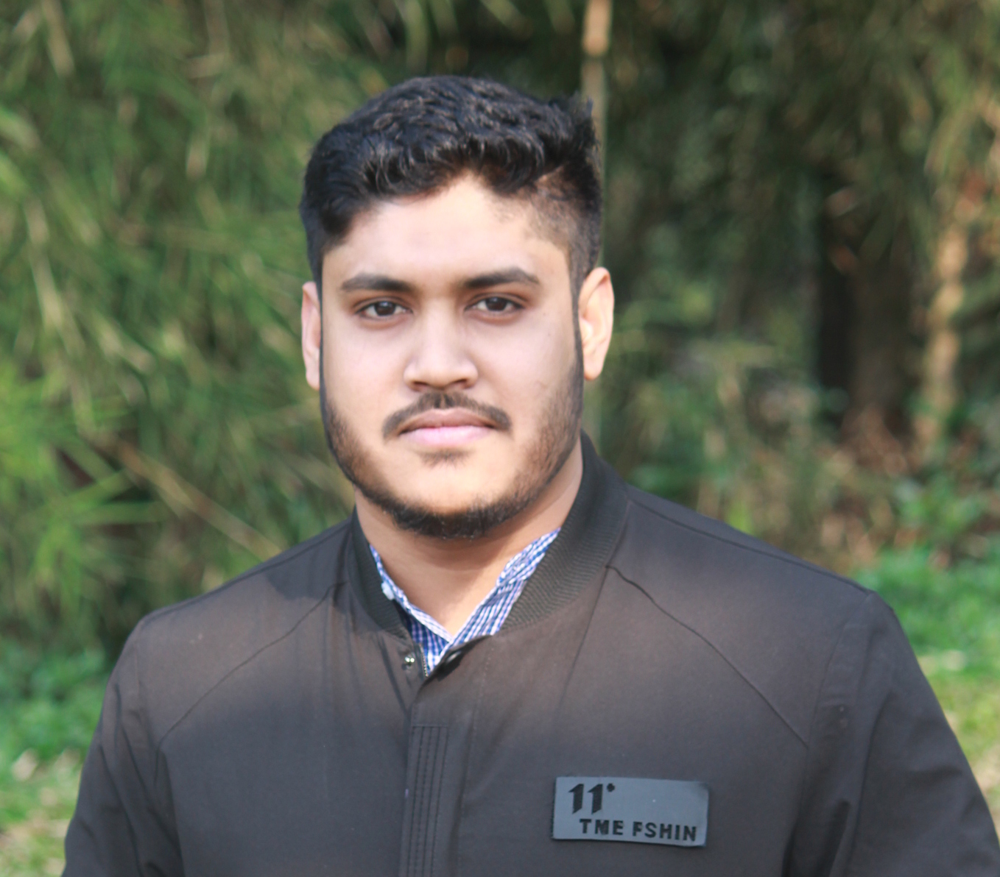

Introduction
Md. Rasel
About Me
I am experienced in System administration and networking having knowledge with several system and networks. I have been working with CISCO,Ciena, Mikrotik and differents typs of soft switch for voice and data communication since 2016. From Server and system administration i have knowledge on different virtualization technique such as,Proxmox,VirtualBox,Ovirt and others and from server i have been working with Red hat 7.1, Windows sever 2012 R2 and more
Area of Experts
Networking, Telecommunication Server & System Administration
Contact link
Communication
English
Bangla
Education
MSc
Computer Science and Engnieering
BSc
Electrical & Electronics and Engnieering
HSC
Science
SSC
Science
United International University
United International University
Northern college Bangladesh
Mohammadpur Govt. High School
Life of a Engineer
Here is a quote from WWF's website:
For 50 years, WWF has been protecting the future of nature. The world's leading conservation organization, WWF works in 100 countries and is supported by 1.2 million members in the United States and close to 5 million globally.
You can Contact with Me
The Attribute of HTML tag are as below
| Tag | Value | Description |
|---|---|---|
| id | ID Name | Declared unique id for the element. |
| class | Class Name | Used in Cascading Style Sheet (CSS). |
| style | CSS properties | CSS code specifies inline the HTML element is presented. |
| title | Title Description | Display on the "tooltip" for your elements. |
Experience
Senior Engineer & Team lead
Being a Senior Engineer, i have to maintain the core network system and follow up the whole operation for IGW, ICX , IIG & ITES. From IGW and ICX section i have to configure soft-switch, SIP and ISUP trunk, UMG, huawei mux and all other device related to the operation of IGW and ICX.In IIG i have to configure and maintain the routing protocol such as BGP, OSPF, ACL, policy-map and more.From ITES sector i am responsible for maintaing and configuring the the virtual environment created on Proxmox,Ovirt,Vmware workstation,virtual box and more, also i have to configure all mail server and monitoring server. Apart from all this as a NOC incharge i have to maintain a team of 8 members
Engineer
Being a Senior Engineer, i have to maintain the core network system and follow up the whole operation for IGW, ICX , IIG & ITES. From IGW and ICX section i have to configure soft-switch, SIP and ISUP trunk, UMG, huawei mux and all other device related to the operation of IGW and ICX.In IIG i have to configure and maintain the routing protocol such as BGP, OSPF, ACL, policy-map and more.From ITES sector i am responsible for maintaing and configuring the the virtual environment created on Proxmox,Ovirt,Vmware workstation,virtual box and more, also i have to configure all mail server and monitoring server. Apart from all this as a NOC incharge i have to maintain a team of 8 members
Certification
- Cisco Certified Network Associate Course (CCNA) from UIU Cisco Networking Academy
- Linux System Administration and Server Configurations Course Red Hat 7.1 from UIU
- Thesis Project on Automated Network Monitoring & Analysis using Nagios under supervision of Prof. Dr.Salekul Islam Department head of CSE.
- 4 Months Internship on Networking on UIU CITS (Center for Information Technology and System)